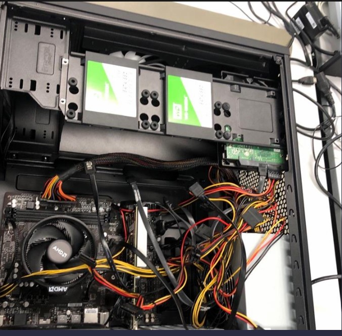

Das Innere eines Computers
Wir mussten einen PC auseinanderbauen und wieder zusammenbauen. Das Ziel war es das der Computer wie vorher läuft.
Arbeitscomputer
In einer Gruppe mussten wir zwei Computer herstellen die ideal für das Büro geeignet sind. Wir waren vier Leute, also teilten wir uns in zweier Gruppen ein und jede Gruppe stellte einen Arbeitscomputer her. Wir hatten keine Probleme damit, weil unsere Komponennten für den Computer erfüllten alle Kriterien.
Am Ende mussten wir wine Tabelle mit all den Teilen von den beiden Computern gestalten und wir mussten uns noch entscheiden welcher Computer besser für den Büro geeignet ist. Schliesslich mussten wir das ganze dann Präsentieren.
PC auseinanderbauen
Am Mittwoch haben wir einen Computer auseinandergenommen und seine einzelnen Teile analysiert. Danach mussten wir Ihn wieder so zusammenbauen, dass er wieder schliesslich funktioniert. Die wichtigsten Teile eines Computers sind hier unten aufgelistet.
- Prozessor (CPU)
- Arbeitspeicher
- Motherboard
- Grafikkarte
Danach haben wir den Computer wieder zusammengebaut und wie erwartet lief er nicht aber nach ein paar Änderungen hat er Tatsächlich wieder funktionier. Dazu habe ich dann noch eine Dokumentation über die Arbeit verfasst.
Fazit
Mein Fazit ist das ich diese Woche bisher am aufregendsten fand, weil fast jede Aufgabe Spass gemacht hat und dazu auch noch lehrreich war.